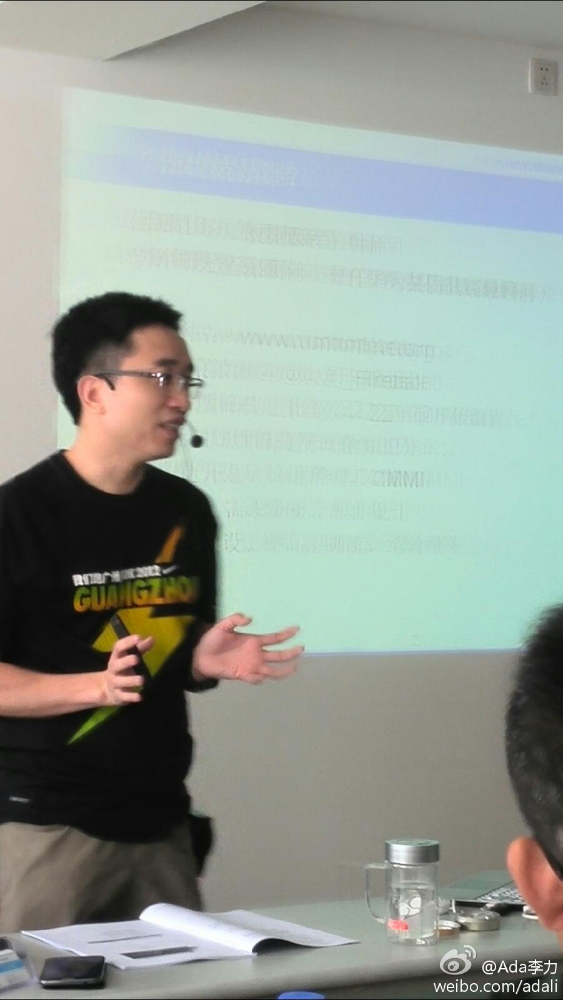
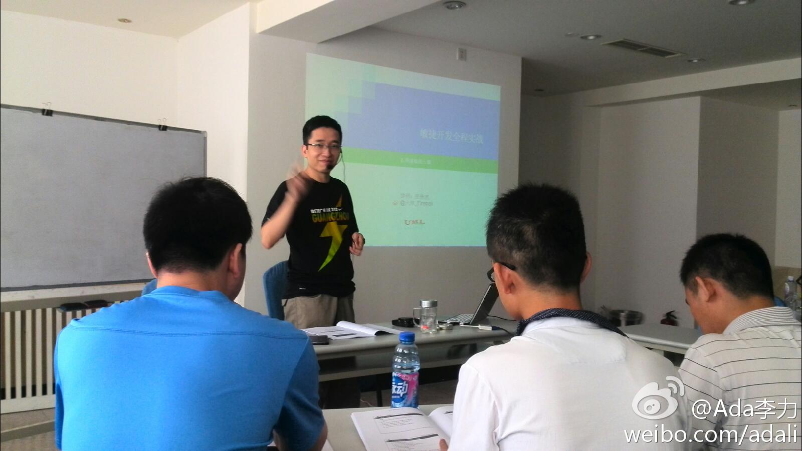

昨天的培训有学院从天津赶来。也有邻座学员说是自己付费来的，公司对这类培训并不支持，而他对职业有自己的想法，当时就觉得这个人未来可期。而我，在考虑社区运营中，如何使用Scrum。@Ada李力:很长时间没上过课，这次要参加一天的“敏捷开发实践”。@火球_Fireball 
至少你可以在自己负责的部门里做起来，至于其它部门，能影响到的则尽力影响吧。对创业公司而言，从零开始，可能更容易做。[呵呵]//@庞拟: scrum的实施，需要全公司的支持。//@Ada李力:在考虑社区运营中，如何使用Scrum。@Ada李力:很长时间没上过课，这次要参加一天的“敏捷开发实践”。@火球_Fireball
敏捷在国内传播传播阶段，我因为不再从事具体研发工作，一直没有花精力去详细了解它。不过偶尔看到的文章，倒让我一直对敏捷思想大有好感。而让我对敏捷一直没有行动的原因则是，接触到几个敏捷信徒，给我的印象是不靠谱。
脱离大方向，只挑对自己最有利的条款，习惯扯皮的在哪里都会扯，敏捷不会解决这矛盾，招聘才能。//@时蝇喜箭: 参与的业务人员最喜欢的一条敏捷原则是 “Welcome changing requirements, even late in development. Agile processes harness change for the customer's competitive advantage”@Ada李力:敏捷在国内传播传播阶段，我因为不再从事具体研发工作，一直没有花精力去详细了解它。不过偶尔看到的文章，倒让我一直对敏捷思想大有好感。而让我对敏捷一直没有行动的原因则是，接触到几个敏捷信徒，给我的印象是不靠谱。
回复@罗大宁v:确实，昨天上课最好玩的一句话就是：敏捷也要讲中国特色。 //@罗大宁v:国人对无论何种流程管理，都很擅长使用小伎俩，保留形式，去其精神，落实糙猛快 //@Ada李力:脱离大方向，只挑对自己最有利的条款，习惯扯皮的在哪里都会扯，敏捷不会解决这矛盾，招聘才能。 //@时蝇喜箭: 参与的业务@Ada李力:敏捷在国内传播传播阶段，我因为不再从事具体研发工作，一直没有花精力去详细了解它。不过偶尔看到的文章，倒让我一直对敏捷思想大有好感。而让我对敏捷一直没有行动的原因则是，接触到几个敏捷信徒，给我的印象是不靠谱。
开发工具和敏捷没有必然联系吧。我觉得敏捷更多强调是对组织形态的变化，比如成员间平等，组织内信息公开透明，成员相互承诺和帮助等等。//@蓝海何晓阳: 脱离环境，再好的理念也没用。国内的程序员一般对DevOps工具，APM工具，自动打包自动测试自动发布ABtest等工具没有一点概念，怎么敏捷？@Ada李力:敏捷在国内传播传播阶段，我因为不再从事具体研发工作，一直没有花精力去详细了解它。不过偶尔看到的文章，倒让我一直对敏捷思想大有好感。而让我对敏捷一直没有行动的原因则是，接触到几个敏捷信徒，给我的印象是不靠谱。
是不是说，现在咨询公司已经沦落成外包公司和公关公司了？@阿朱:甲方为什么找咨询公司？十几二十年前主要是为面子（请老外来做咨询，多有面子！），部分是真想学习国外先进经验（没办法，管理基础太差）。但现在甲方找咨询公司，要么就是甲方人手不够或嫌太麻烦不愿亲自动手，要么就是企业内部存在种种“你懂得”的原因不好亲自出面，需要找一个外部代言人
帮转。“老军医”这个词已经被一些无底限的广告给毁了，现在解放军XXX医院，武警XXX医院名声也堪忧。@龚晓明医生:一个网友的私信，给几点建议：1. 解放军医院除了少数几个大的，妇科大多是被骗子承包的，不要被解放军武警所迷惑，去了你的钱包不保不说，而且还可能受伤害；2. 这些医院大多是用某度在做推广，看看某度健康里面的医院基本上不靠谱，搜索出来的医院，大多是花钱做广告的，这些钱是要从你身上赚回去的。
电视台早已经占领了吧。//@顾晓斌:各地电线杆、电台已经沦陷，现在连电视台也要被游医骗子占领吗？//@付亮的竞争情报应用: 转@新华网舆情在线@行业信息化专家常海峰:中国人民被各大媒体，电视台，变成了东亚病夫。中国人究竟有多少病人？@央视新闻 @央视新闻 星期天7个电视台同时播放这些所谓得专家，健康咨询，虚假夸大疗效。
注意到杨立东在自己的创业公司中使用开源软件Readmine做项目管理和缺陷跟踪工具工 ，于是也上网搜了下，功能很全。这句话是没错的：工欲擅其事，必先利其器。@Ada李力:今天又翻了翻@杨立东HM 的《微管理》，主要看第四部分-联网时代，互联网产品团队采用敏捷的方法。和前几部分相似，内容是提纲挈领化的。
//@Jumtso: 回复@Ada李力:昨天培训的老师也聊到这个话题，如果团队是重技术的，推行敏捷是可先从持续集成，自动化测试，DevOps入手，这样可以加快团队快速交付的能力。如果是重业务型的，那这些工具型的东西可以先缓下，应该先从需求的切分，任务的评估入手。@Ada李力:敏捷在国内传播传播阶段，我因为不再从事具体研发工作，一直没有花精力去详细了解它。不过偶尔看到的文章，倒让我一直对敏捷思想大有好感。而让我对敏捷一直没有行动的原因则是，接触到几个敏捷信徒，给我的印象是不靠谱。
回复@非正常土豆:多谢多谢，按您的提示已解决问题。 //@非正常土豆:浏览器缓存@Ada李力:奇怪，新增解析记录的域名，在其它浏览器上都可以访问，独独Chrome上访问不到，Chrome插件也没发现异常。@网路游侠 知道是怎么回事吗？